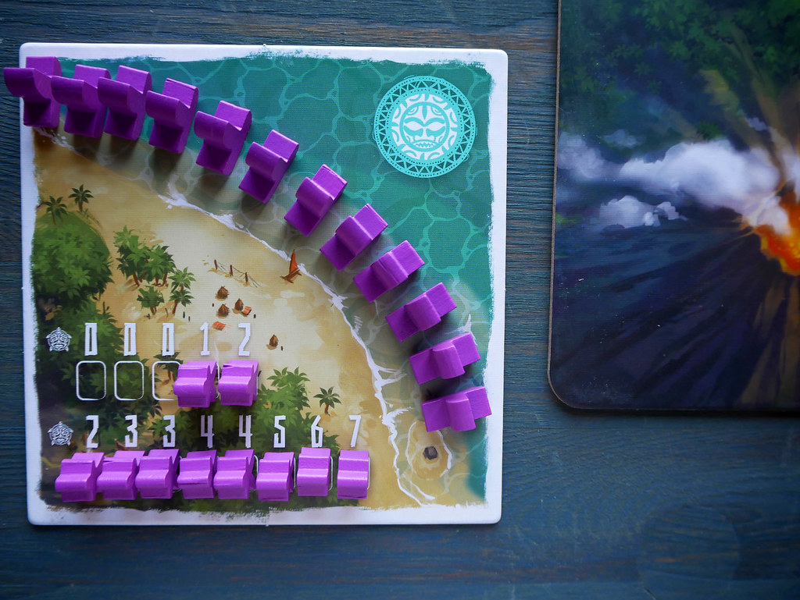
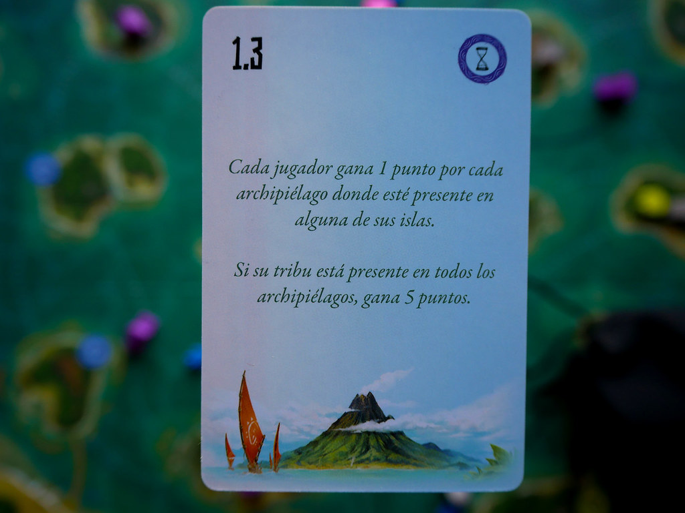
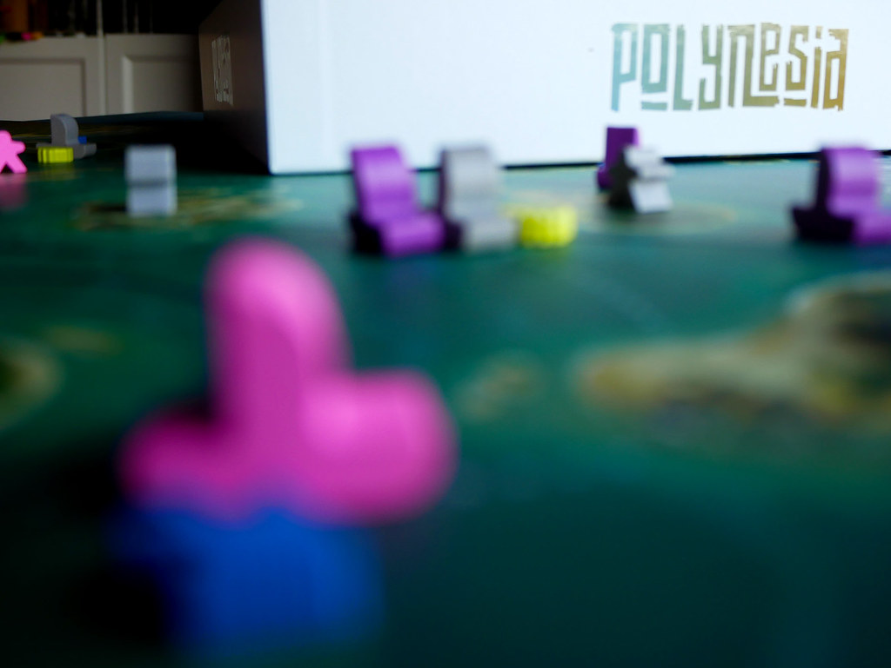

Polynesia

Polynesia es uno de los juegos publicados por Ludonova para el SPIEL 2020. En esta ocasión la editorial española confía en el diseño de Peer Sylvester. Vamos a entrar en detalle de lo que ofrece este juego; análisis y valoración.
El volcán cercano a tu isla entrará pronto en erupción. ¿Serás capaz de salvar a tu gente de una condena segura? ¿Hay un nuevo hogar habitable ahí fuera? Si es así, ¿conseguirás suficientes recursos para alimentar a tu tribu?
Componentes:
- Mapa de doble cara
- 4 tableros personales
- 10 piedras de lava
- 52 miembros de la tribu (4x13)
- 60 barcos
- 30 pescados
- 30 conchas
- 1 marcador de jugador inicial
- 8 marcadores de recurso x5
- 14 fichas de isla
- 10 fichas de punto
- 18 cartas de marea
- 4 ayudas
- 1 indicador de fase
- Bolsa de tela
- Reglamento
Objetivo en Polynesia
En “Polynesia” intentarás salvar a tanta gente de tu tribu como sea posible. Explorarás nuevos caminos hacia nuevas islas o pedirás a otras tribus que compartan sus conocimientos contigo a cambio de recursos. Conducirás a tu tribu a través de rutas conocidas para que pueblen islas seguras o simplemente para que pesquen recursos necesarios. No te resultará fácil y las mareas afectarán tus acciones.
En este juego de mesa, el jugador que tenga más exito en esta misión ganará la partida y será elegido nuevo jefe de todas las tribus en sus nuevos hogares.
Como juegar
En Polynesia los jugadores tienen que salvar a los miembros de su tribu de los peligros de un volcán. Para ello los llevan a islas seguras lejanas a la erupción mientras tratan de cumplir los objetivos que haya en las cartas de Marea.
Polynesia se desarrolla en un número variable de rondas. En cada rondas se juegan las siguientes dos fases:
- Fase de acciones
- Fase de mantenimiento
Acciones
En cada ronda hay 3 fases de acciones marcadas con los números 3, 2 y 1. Empezando por el jugador inicial se harán estas 3 fases en sentido horario por parte de todos los jugadores. En tu turno debes hacer una de las siguientes acciones:
- Explorar: Colocas uno de tus barcos que tiene un coste igual al valor en la fase actual en el tipo de recurso elegido (pescado o Conchas) si haces una nueva ruta. Si esa ruta ya tiene un barco debes pagar 2 recursos del tipo existente a cada jugador que ya tenga un barco en esa ruta.
- Viajar: consiste en mover a los miembros de tu tribu de unas islas o otras por las rutas que haya exploradas. El numero de movimientos disponible depende de la ronda en la que hagamos esta acción. Puedes viajar por la ruta de otro jugador si cumples lo siguiente; Debe existir un miembro de la tribu dueña de la ruta y debes pagar un recurso de los que haya costado esa ruta.
- Poblar: Con esta acción trasladas miembros de tu tribu al tablero central desde tu tablero personal. No importa la fase en la que lo hagas. Metes 3 si vas a la isla del volcán y uno en cualquier otra isla.
- Pescar: Pescando obtienes tantos recursos del tipo elegido como la fase en la que estás.
Mantenimiento
En las fase de mantenimiento seguimos los siguientes paso en orden:
- Erupción del volcán: En esta fase sacamos cubos de la bolsa. Hay 3 tipos de cubos rojo, gris o negro. Cuando se sacan 6 rojos se termina la partida de inmediato y el negro te hace sacar 2 cubos mas de la bolsa.
- Declive: El jugador inicial elige uno de los recursos y todos los jugadores deben descartarse todos los recursos que tengan de ese tipo.
- Recursos: Todos los jugadores reciben recursos por cada isla en la que tengan al menos un miembro de su tribu.
- Nuevo jugador inicial: El jugador inicial se pasa al jugador de su izquierda y se prepara la siguiente ronda.
Final de partida
La partida termina de inmediato en el momento en el que se saca el sexto cubo rojo. Todos los miembros de la tribu que estén en la isla del volcán o en las 3 islas adyacentes vuelven al tablero personal. A continuación se puntua lo siguiente:
- El número de mayor valor cuyo hueco esté libre en tu tablero personal.
- 1 por cada símbolo de tortuga en el que tengas un miembro de la tribu.
- 1 por cada ficha de isla de tortuga en tu poder y por cada ficha redonda de tortuga que tengas.
- Los puntos obtenidos por las cartas de Marea.
El jugador con más puntos gana la partida.
Valoración
En definitiva, Polynesia es un juego divertido, con objetivos y juego sencillo que ayudan a los jugadores en su experiencia de juego. gratificante de jugar y con un diseño de tablero expectacular, por lo que la valoración final es:
JUEGAZO!!
Top juegos